Introduction to the animation features
The AnimationPlayer node allows you to create anything from simple to complex animations.
In this guide you learn to:
Work with the Animation Panel
Animate any property of any node
Create a simple animation
In Godot, you can animate anything available in the Inspector, such as Node transforms, sprites, UI elements, particles, visibility and color of materials, and so on. You can also modify values of script variables and even call functions.
Create an AnimationPlayer node
To use the animation tools we first have to create an AnimationPlayer node.
The AnimationPlayer node type is the data container for your animations. One AnimationPlayer node can hold multiple animations, which can automatically transition to one another.

The AnimationPlayer node
After you create an AnimationPlayer node, click on it to open the Animation Panel at the bottom of the viewport.
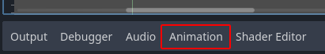
The animation panel position
The animation panel consists of four parts:

The animation panel
Animation controls (i.e. add, load, save, and delete animations)
The tracks listing
The timeline with keyframes
The timeline and track controls, where you can zoom the timeline and edit tracks, for example.
Computer animation relies on keyframes
A keyframe defines the value of a property at a point in time.
Diamond shapes represent keyframes in the timeline. A line between two keyframes indicates that the value doesn't change between them.
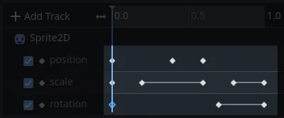
Keyframes in Godot
You set values of a node's properties and create animation keyframes for them. When the animation runs, the engine will interpolate the values between the keyframes, resulting in them gradually changing over time.
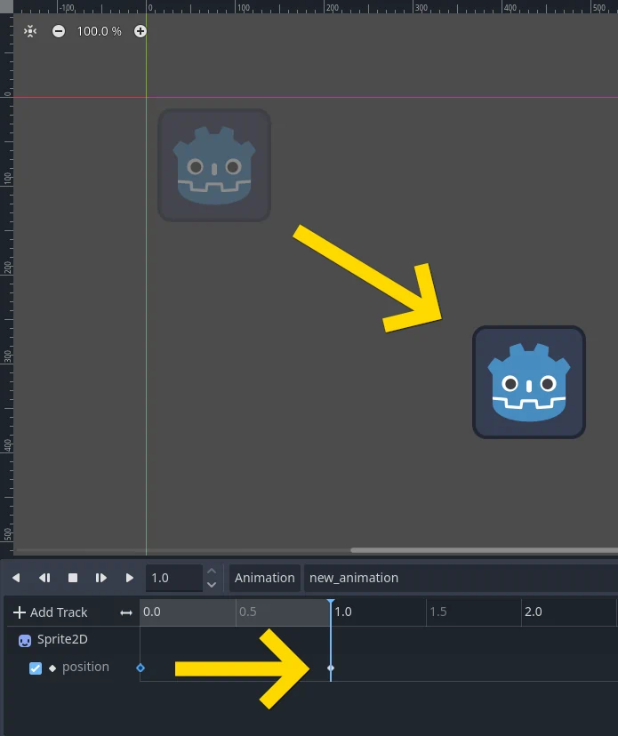
Two keyframes are all it takes to obtain a smooth motion
The timeline defines how long the animation will take. You can insert keyframes at various points, and change their timing.
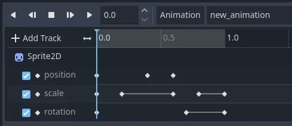
The timeline in the animation panel
Each line in the Animation Panel is an animation track that references a
Normal or Transform property of a node. Each track stores a path to
a node and its affected property. For example, the position track
in the illustration refers to the position property of the Sprite2D
node.

Example of Normal animation tracks
Tip
If you animate the wrong property, you can edit a track's path at any time by double-clicking on it and typing the new path. Play the animation using the "Play from beginning" button (or pressing Shift + D on keyboard) to see the changes instantly.
Tutorial: Creating a simple animation
Scene setup
For this tutorial, we'll create a Sprite node with an AnimationPlayer as its child. We will animate the sprite to move between two points on the screen.

Our scene setup
Warning
AnimationPlayer inherits from Node instead of Node2D or Node3D, which means that the child nodes will not inherit the transform from the parent nodes due to a bare Node being present in the hierarchy.
Therefore, it is not recommended to add nodes that have a 2D/3D transform as a child of an AnimationPlayer node.
The sprite holds an image texture. For this tutorial, select the Sprite2D node, click Texture in the Inspector, and then click Load. Select the default Godot icon for the sprite's texture.
Adding an animation
Select the AnimationPlayer node and click the "Animation" button in the animation editor. From the list, select "New" () to add a new animation. Enter a name for the animation in the dialog box.

Add a new animation
Managing animation libraries
For reusability, the animation is registered in a list in the animation library resource. If you add an animation to AnimationPlayer without specifying any particular settings, the animation will be registered in the [Global] animation library that AnimationPlayer has by default.

Manage animations
If there are multiple animation libraries and you try to add an animation, a dialog box will appear with options.
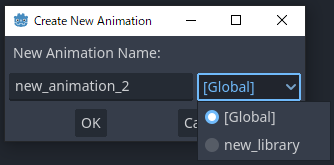
Add a new animation with library option
Adding a track
To add a new track for our sprite, select it and take a look at the toolbar:
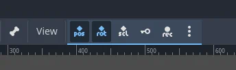
Convenience buttons
These switches and buttons allow you to add keyframes for the selected node's location, rotation, and scale. Since we are only animating the sprite's position, make sure that only the location switch is selected. The selected switches are blue.
Click on the key button to create the first keyframe. Since we don't have a track set up for the Position property yet, Godot will offer to create it for us. Click Create.
Godot will create a new track and insert our first keyframe at the beginning of the timeline:
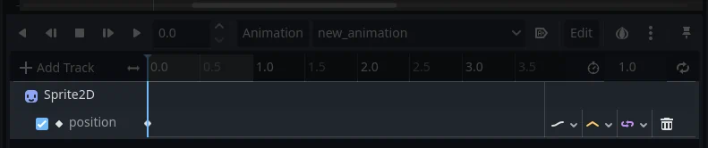
The sprite track
The second keyframe
We need to set our sprite's end location and how long it will take for it to get there.
Let's say we want it to take two seconds to move between the points. By default, the animation is set to last only one second, so change the animation length to 2 in the controls on the right side of the animation panel's timeline header.

Animation length
Now, move the sprite right, to its final position. You can use the Move tool in the toolbar or set the Position's X value in the Inspector.
Click on the timeline header near the two-second mark in the animation panel and then click the key button in the toolbar to create the second keyframe.
Run the animation
Click on the "Play from beginning" () button.
Yay! Our animation runs:
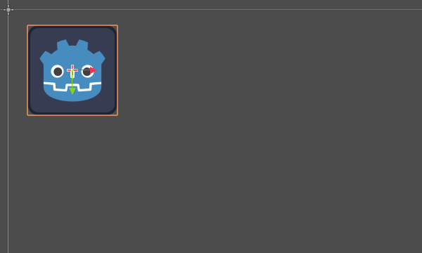
The animation
Autoplay on load
You can make it so an animation plays automatically when the AnimationPlayer nodes scene starts, or joins another scene. To do this click the "Autoplay on load" button in the animation editor, it's right next to the edit button.

The icon for it will also appear in front of the name of the animation, so you can easily identify which one is the autoplay animation.
Back and forth
Godot has an interesting feature that we can use in animations. When Animation Looping is set but there's no keyframe specified at the end of the animation, the first keyframe is also the last.
This means we can extend the animation length to four seconds now, and Godot will also calculate the frames from the last keyframe to the first, moving our sprite back and forth.

Animation loop
You can change this behavior by changing the track's loop mode. This is covered in the next chapter.
Track settings
Each property track has a settings panel at the end, where you can set its update mode, track interpolation, and loop mode.

Track settings
The update mode of a track tells Godot when to update the property values. This can be:
Continuous: Update the property on each frame
Discrete: Only update the property on keyframes
Capture: if the first keyframe's time is greater than
0.0, the current value of the property will be remembered and will be blended with the first animation key. For example, you could use the Capture mode to move a node that's located anywhere to a specific location.

Track mode
You will usually use "Continuous" mode. The other types are used to script complex animations.
Track interpolation tells Godot how to calculate the frame values between keyframes. These interpolation modes are supported:
Nearest: Set the nearest keyframe value
Linear: Set the value based on a linear function calculation between the two keyframes
Cubic: Set the value based on a cubic function calculation between the two keyframes
Linear Angle (Only appears in rotation property): Linear mode with shortest path rotation
Cubic Angle (Only appears in rotation property): Cubic mode with shortest path rotation
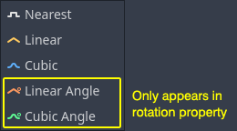
Track interpolation
With Cubic interpolation, animation is slower at keyframes and faster between them, which leads to more natural movement. Cubic interpolation is commonly used for character animation. Linear interpolation animates changes at a fixed pace, resulting in a more robotic effect.
Godot supports two loop modes, which affect the animation when it's set to loop:
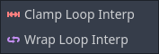
Loop modes
Clamp loop interpolation: When this is selected, the animation stops after the last keyframe for this track. When the first keyframe is reached again, the animation will reset to its values.
Wrap loop interpolation: When this is selected, Godot calculates the animation after the last keyframe to reach the values of the first keyframe again.
Keyframes for other properties
Godot's animation system isn't restricted to position, rotation, and scale. You can animate any property.
If you select your sprite while the animation panel is visible, Godot will display a small keyframe button in the Inspector for each of the sprite's properties. Click on one of these buttons to add a track and keyframe to the current animation.
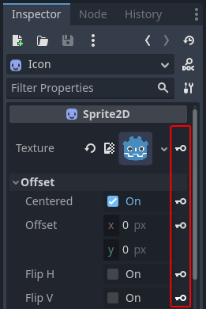
Keyframes for other properties
Edit keyframes
You can click on a keyframe in the animation timeline to display and edit its value in the Inspector.
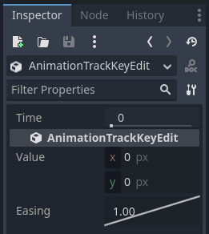
Keyframe editor editing a key
You can also edit the easing value for a keyframe here by clicking and dragging its easing curve. This tells Godot how to interpolate the animated property when it reaches this keyframe.
You can tweak your animations this way until the movement "looks right."
Using RESET tracks
You can set up a special RESET animation to contain the "default pose". This is used to ensure that the default pose is restored when you save the scene and open it again in the editor.
For existing tracks, you can add an animation called "RESET" (case-sensitive), then add tracks for each property that you want to reset. The only keyframe should be at time 0, and give it the desired default value for each track.
If AnimationPlayer's Reset On Save property is set to true,
the scene will be saved with the effects of the reset animation applied
(as if it had been seeked to time 0.0).
This only affects the saved file – the property tracks in the editor stay
where they were.
If you want to reset the tracks in the editor, select the AnimationPlayer node, open the Animation bottom panel then choose Apply Reset in the animation editor's Edit dropdown menu.
When using the keyframe icon next to a property in the inspector the editor will ask you to automatically create a RESET track.
Note
RESET tracks are also used as reference values for blending. See also For better blending.
Onion Skinning
Godot's animation editor allows you use onion skinning while creating an animation. To turn this feature on click on the onion icon in the top right of the animation editor. Now there will be transparent red copies of what is being animated in its previous positions in the animation.
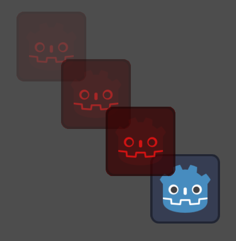
The three dots button next to the onion skinning button opens a dropdown menu that lets you adjust how it works, including the ability to use onion skinning for future frames.
Animation Markers
Animation markers can be used to play a specific part of an animation rather than the whole thing. Here is a use case example, there's an animation file that has a character doing two distinct actions, and the project requires the whole animation, as well as both actions individually. Instead of making two additional animations, markers can be placed on the timeline, and both actions can now be played individually.
To add a marker to an animation right click the space above the timeline and select Insert Marker....
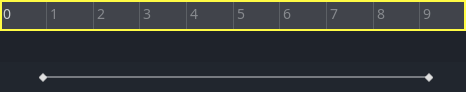
All markers require a unique name within the animation. You can also set the color of the markers for improved organization.
To play the part of the animation between two markers use the play_section_with_markers() and play_section_with_markers_backwards() methods. If no start marker is specified then the beginning of the animation is used, and if no end marker is specified, then the end of the animation is used.
If the end marker is after the end of the animation then the AnimationPlayer will
clamp the end of the section so it does not go past the end of the animation.
To preview the animation between two markers use Shift + Click to select the markers. When two are selected the space between them should be highlighted in red.

Now all of the play animation buttons will act as if the selected area is the whole animation. Play Animation from Start will treat the first marker as the start of the animation, Play Animation Backwards from End will treat the second marker as the end, and so on.